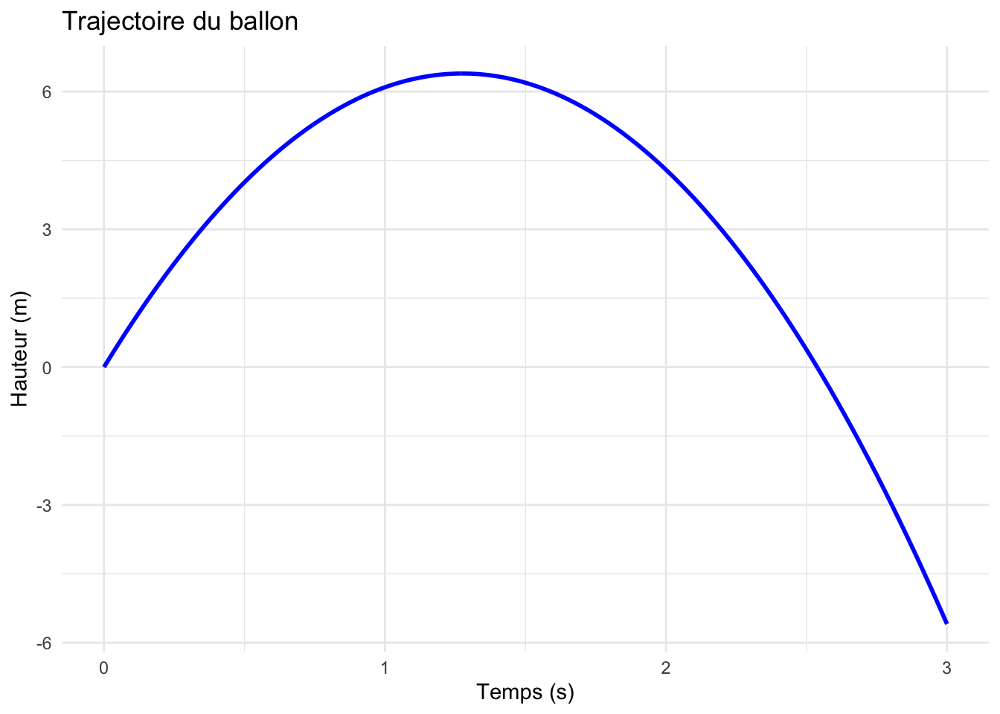
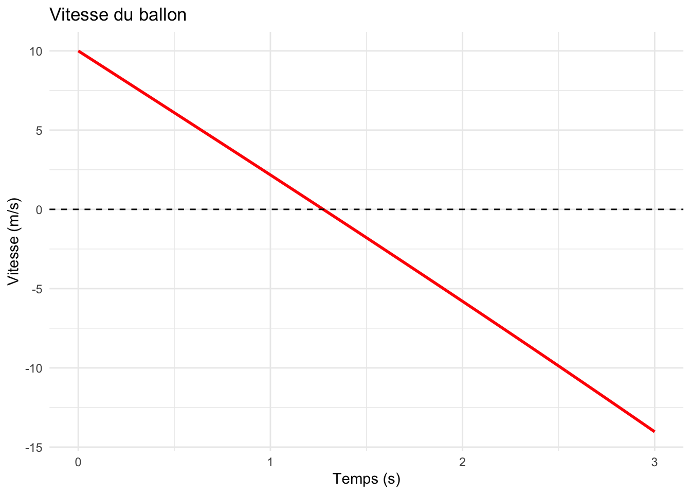
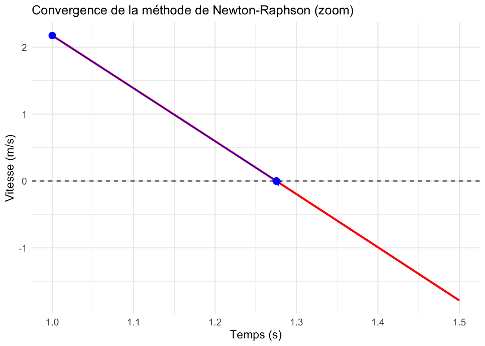

Un ballon est lancé verticalement vers le haut avec une vitesse initiale de 10 m/s. En tenant compte de la résistance de l’air, sa hauteur (en mètres) après \(t\) secondes est donnée par la fonction :
\[h(t) = 50\ln(\cosh(0.2t)) + 10t - 4.9t^2\]
À quel moment le ballon atteint-il son altitude maximale ?
1. Visualisation du problème
Commençons par visualiser la hauteur du ballon en fonction du temps :
Code
library(ggplot2)library(dplyr)# Fonction hauteurh <-function(t) {50*log(cosh(0.2* t)) +10* t -4.9* t^2}# Création des donnéest_vals <-seq(0, 3, by =0.01)height_data <-data.frame(t = t_vals,height =sapply(t_vals, h))# Graphiqueggplot(height_data, aes(x = t, y = height)) +geom_line(color ="blue", size =1) +labs(x ="Temps (s)", y ="Hauteur (m)") +theme_minimal() +ggtitle("Trajectoire du ballon")

Figure 6.1: Hauteur du ballon en fonction du temps
2. La vitesse du ballon
La vitesse est la dérivée de la hauteur. Pour trouver le point culminant, nous devons trouver quand la vitesse est nulle.
\[v(t) = h'(t) = 10\tanh(0.2t) + 10 - 9.8t\]
Visualisons la vitesse :
Code
# Fonction vitessev <-function(t) {10*tanh(0.2* t) +10-9.8* t}# Création des donnéesvelocity_data <-data.frame(t = t_vals,velocity =sapply(t_vals, v))# Graphiqueggplot(velocity_data, aes(x = t, y = velocity)) +geom_line(color ="red", size =1) +geom_hline(yintercept =0, linetype ="dashed") +labs(x ="Temps (s)", y ="Vitesse (m/s)") +theme_minimal() +ggtitle("Vitesse du ballon")

Figure 6.2: Vitesse du ballon en fonction du temps
3. Méthode de Newton-Raphson
Pour trouver quand la vitesse est nulle, nous devons résoudre : \[f(t) = 10\tanh(0.2t) + 10 - 9.8t = 0\]
La dérivée de cette fonction est : \[f'(t) = 2\,\text{sech}^2(0.2t) - 9.8\]
Implémentons la méthode de Newton-Raphson :
Code
# Fonction f(t) et sa dérivéef <-function(t) {10*tanh(0.2* t) +10-9.8* t}f_prime <-function(t) {2* (1/cosh(0.2* t))^2-9.8}# Fonction Newton-Raphsonnewton_raphson <-function(x0, tolerance =1e-6, max_iter =100) { x <- x0 iterations <-data.frame(iteration =0,x = x0,f_x =f(x0) )for (i in1:max_iter) { x_new <- x -f(x) /f_prime(x) iterations <-rbind(iterations, data.frame(iteration = i,x = x_new,f_x =f(x_new)))if (abs(x_new - x) < tolerance) {break } x <- x_new }return(iterations)}# Application avec x0 = 1resultats <-newton_raphson(1)# Affichage des résultatsknitr::kable(resultats,col.names =c("Itération", "t (secondes)", "f(t)"),digits =6,caption ="Résultats de la méthode de Newton-Raphson")
Résultats de la méthode de Newton-Raphson
Itération
t (secondes)
f(t)
0
1.000000
2.173753
1
1.275930
-0.006241
2
1.275143
0.000000
3
1.275143
0.000000
4. Vérification graphique
Visualisons la convergence sur le graphique de la vitesse :
Code
# Filtrer les données pour l'intervalle [1, 1.5]velocity_data_zoom <- velocity_data %>%filter(t >=1& t <=1.5)# Ajout des points d'itération au graphique de vitesse avec zoomggplot(velocity_data_zoom, aes(x = t, y = velocity)) +geom_line(color ="red", size =1) +geom_hline(yintercept =0, linetype ="dashed") +geom_point(data = resultats, aes(x = x, y = f_x),color ="blue",size =3) +geom_path(data = resultats, aes(x = x, y = f_x),color ="blue",arrow =arrow(length =unit(0.2, "cm")),size =0.5) +labs(x ="Temps (s)", y ="Vitesse (m/s)") +scale_x_continuous(limits =c(1, 1.5),breaks =seq(1, 1.5, 0.1)) +theme_minimal() +ggtitle("Convergence de la méthode de Newton-Raphson (zoom)") +theme(axis.text =element_text(size =10),axis.title =element_text(size =12))

Figure 6.3: Convergence de la méthode de Newton-Raphson
Conclusion
La méthode de Newton-Raphson converge rapidement vers la solution : le ballon atteint son altitude maximale après environ 1.275 secondes.
À cet instant, l’altitude du ballon est de 6.39 mètres.
Code source
---title: "Le ballon météorologique"author: "Jérôme Soucy"format: html: theme: cosmo css: styles.css toc: true toc-depth: 2 number-sections: false highlight-style: github code-fold: true warning: false message: false---Un ballon est lancé verticalement vers le haut avec une vitesse initiale de 10 m/s. En tenant compte de la résistance de l'air, sa hauteur (en mètres) après $t$ secondes est donnée par la fonction :$$h(t) = 50\ln(\cosh(0.2t)) + 10t - 4.9t^2$$À quel moment le ballon atteint-il son altitude maximale ?### 1. Visualisation du problèmeCommençons par visualiser la hauteur du ballon en fonction du temps :```{r}#| label: fig-hauteur#| fig-cap: "Hauteur du ballon en fonction du temps"library(ggplot2)library(dplyr)# Fonction hauteurh <-function(t) {50*log(cosh(0.2* t)) +10* t -4.9* t^2}# Création des donnéest_vals <-seq(0, 3, by =0.01)height_data <-data.frame(t = t_vals,height =sapply(t_vals, h))# Graphiqueggplot(height_data, aes(x = t, y = height)) +geom_line(color ="blue", size =1) +labs(x ="Temps (s)", y ="Hauteur (m)") +theme_minimal() +ggtitle("Trajectoire du ballon")```### 2. La vitesse du ballonLa vitesse est la dérivée de la hauteur. Pour trouver le point culminant, nous devons trouver quand la vitesse est nulle.$$v(t) = h'(t) = 10\tanh(0.2t) + 10 - 9.8t$$Visualisons la vitesse :```{r}#| label: fig-vitesse#| fig-cap: "Vitesse du ballon en fonction du temps"# Fonction vitessev <-function(t) {10*tanh(0.2* t) +10-9.8* t}# Création des donnéesvelocity_data <-data.frame(t = t_vals,velocity =sapply(t_vals, v))# Graphiqueggplot(velocity_data, aes(x = t, y = velocity)) +geom_line(color ="red", size =1) +geom_hline(yintercept =0, linetype ="dashed") +labs(x ="Temps (s)", y ="Vitesse (m/s)") +theme_minimal() +ggtitle("Vitesse du ballon")```### 3. Méthode de Newton-RaphsonPour trouver quand la vitesse est nulle, nous devons résoudre : $$f(t) = 10\tanh(0.2t) + 10 - 9.8t = 0$$La dérivée de cette fonction est : $$f'(t) = 2\,\text{sech}^2(0.2t) - 9.8$$Implémentons la méthode de Newton-Raphson :```{r}# Fonction f(t) et sa dérivéef <-function(t) {10*tanh(0.2* t) +10-9.8* t}f_prime <-function(t) {2* (1/cosh(0.2* t))^2-9.8}# Fonction Newton-Raphsonnewton_raphson <-function(x0, tolerance =1e-6, max_iter =100) { x <- x0 iterations <-data.frame(iteration =0,x = x0,f_x =f(x0) )for (i in1:max_iter) { x_new <- x -f(x) /f_prime(x) iterations <-rbind(iterations, data.frame(iteration = i,x = x_new,f_x =f(x_new)))if (abs(x_new - x) < tolerance) {break } x <- x_new }return(iterations)}# Application avec x0 = 1resultats <-newton_raphson(1)# Affichage des résultatsknitr::kable(resultats,col.names =c("Itération", "t (secondes)", "f(t)"),digits =6,caption ="Résultats de la méthode de Newton-Raphson")```### 4. Vérification graphiqueVisualisons la convergence sur le graphique de la vitesse :```{r}#| label: fig-convergence#| fig-cap: "Convergence de la méthode de Newton-Raphson"# Filtrer les données pour l'intervalle [1, 1.5]velocity_data_zoom <- velocity_data %>%filter(t >=1& t <=1.5)# Ajout des points d'itération au graphique de vitesse avec zoomggplot(velocity_data_zoom, aes(x = t, y = velocity)) +geom_line(color ="red", size =1) +geom_hline(yintercept =0, linetype ="dashed") +geom_point(data = resultats, aes(x = x, y = f_x),color ="blue",size =3) +geom_path(data = resultats, aes(x = x, y = f_x),color ="blue",arrow =arrow(length =unit(0.2, "cm")),size =0.5) +labs(x ="Temps (s)", y ="Vitesse (m/s)") +scale_x_continuous(limits =c(1, 1.5),breaks =seq(1, 1.5, 0.1)) +theme_minimal() +ggtitle("Convergence de la méthode de Newton-Raphson (zoom)") +theme(axis.text =element_text(size =10),axis.title =element_text(size =12))```### ConclusionLa méthode de Newton-Raphson converge rapidement vers la solution : le ballon atteint son altitude maximale après environ `r round(tail(resultats$x, 1), 3)` secondes.À cet instant, l'altitude du ballon est de `r round(h(tail(resultats$x, 1)), 2)` mètres.